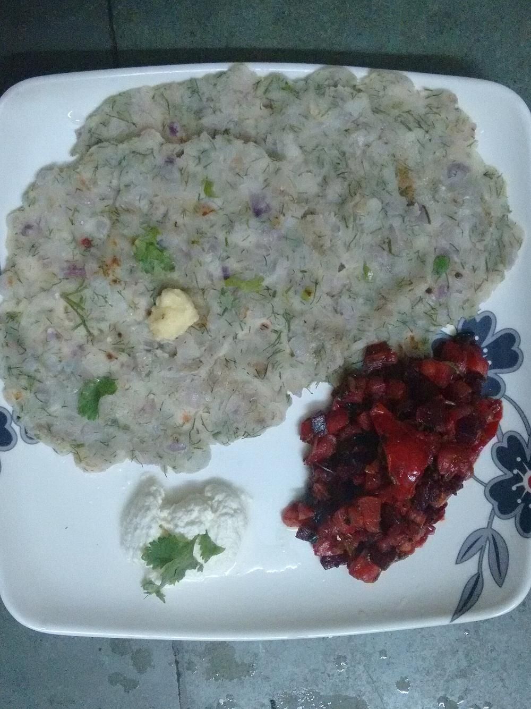

Akki Rotti
rice-flour flatbread patted straight onto the tawa with onion, dill and coconut

Allergens: none of the ten listed below
Checked against the ingredient list for ten allergens: milk, egg, fish, crustaceans, tree nuts, peanuts, sesame, mustard, soy and gluten. Brands vary, so read the label on anything new to you.
Ingredients
Quantities for 3.
- 2 cups Rice Flourfine
- 1 large, very finely chopped Onion
- 1 small, grated Carrotoptional
- 1/4 cup, chopped Dillor coriander-leavesoptional
- 1/4 cup, freshly grated Coconut
- 3, finely chopped Green Chilli
- 12, torn Curry Leaves
- 1 tsp Cumin Seeds
- 1/4 cup, chopped Coriander Leavesoptional
- 1 tsp Salt
- about 1 1/4 cups, hot Water
- 4 tbsp Coconut Oilfor cooking, 1/2 tbsp per rotti
Cookware
stovetop, tawa
Before you start
- Salt the chopped onion and let it sit 5 minutes. The water it releases goes into the dough and makes it easier to pat.
- Mix the dough only when you are ready to cook. Rice-flour dough goes slack and unworkable if it stands.
- Keep a small bowl of water beside the tawa for wetting your fingers while patting.
Method
- Combine the rice flour, onion, carrot, dill, coconut, green chilli, curry leaves, cumin and salt in a wide bowl and rub together with your fingers for a minute.
- Add hot water a little at a time, mixing to a soft dough just past the point of stickiness. Softer than a chapati dough.Too stiff and it will crack on the tawa; too wet and it will not lift.
- Smear 1/2 tbsp coconut oil over a cold tawa and place a lemon-sized ball of dough in the centre.
- With wet fingers, pat the dough outward into a thin 8-inch round with an even edge. Make 3 small holes in it with your finger.Patting on a cold tawa is the trick. On a hot one you will burn your fingertips before the round is even.
- Drizzle a few drops of oil into the holes, cover with a lid and set the tawa over medium heat.
- Cook covered 4 minutes until the surface loses its wet sheen and brown spots appear underneath.
- Uncover, loosen the edges with a spatula, flip and cook 2 minutes more until crisp and golden in patches.
- Slide off and repeat, letting the tawa cool for a minute under running water before patting the next one.A hot tawa cannot be patted on. Cooling between rottis is part of the rhythm.
Storage
Best straight off the tawa. Keeps 1 day at room temperature in a covered box; re-crisp on a dry tawa for 2 minutes a side.
Nutrition Good estimate
Low protein: 8 g a serving, 5% of the calories
| Per serving208 g | Per 100 g | |
|---|---|---|
| Calories | 607 kcal | 293 kcal |
| Protein | 7.6 g | 4 g |
| Carbohydrate | 93.0 g | 45 g |
| of which sugars | 3.8 g | 2 g |
| Fibre | 4.8 g | 2 g |
| Fat | 22.2 g | 11 g |
| of which saturated | 17.4 g | 8 g |
| of which unsaturated | 2.8 g | 1 g |
Worked out from the listed quantities; most of the ingredient list could be weighed. Some ingredients have no exact match in the nutrient database and use the nearest equivalent: curry leaves. Estimated from raw ingredients using USDA FoodData Central. Cooking changes are not modelled, and added salt is excluded, so sodium is not given.
Written and checked against sources, not cooked in a test kitchen. Times, yields, allergens and nutrition are worked out rather than measured, so use your own judgement on doneness and on storing. More in About.